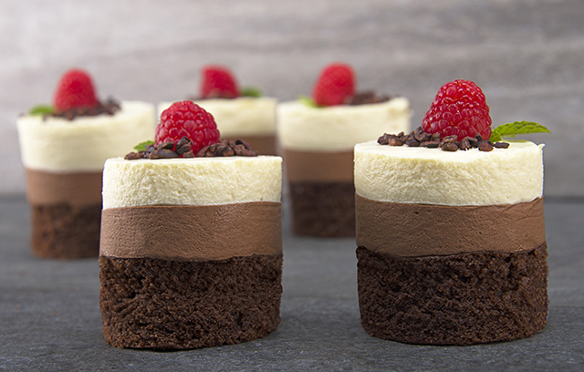

Desserts
Cheesecake

Cheesecake is a sweet dessert consisting of one or more layers. The main, and thickest, layer consists of a mixture of a soft, fresh cheese (typically cottage cheese, cream cheese or ricotta), eggs, and sugar. If there is a bottom layer, it most often consists of a crust or base made from crushed cookies (or digestive biscuits), graham crackers, pastry, or sometimes sponge cake.Cheesecake may be baked or unbaked (and is usually refrigerated).
Cheesecake is usually sweetened with sugar and may be flavored in different ways. Vanilla, spices, lemon, chocolate, pumpkin, or other flavors may be added to the main cheese layer. Additional flavors and visual appeal may be added by topping the finished dessert with fruit, whipped cream, nuts, cookies, fruit sauce, chocolate syrup, or other ingredients.
Brownie with ice-cream

It is typically a brownie topped with a scoop of icecream on top and chocolate syrup added to it. A chocolate brownie or simply a brownie is a square or rectangular chocolate baked confection. Brownies come in a variety of forms and may be either fudgy or cakey, depending on their density. They may include nuts, frosting, cream cheese, chocolate chips, or other ingredients. A variation made with brown sugar and vanilla rather than chocolate in the batter is called a blond brownie or blondie. The brownie was developed in the United States at the end of the 19th century and popularized in the U.S. and Canada during the first half of the 20th century.
Pudding

Pudding, any of several foods whose common characteristic is a relatively soft, spongy, and thick texture. In the United States, puddings are nearly always sweet desserts of milk or fruit juice variously flavoured and thickened with cornstarch, arrowroot, flour, tapioca, rice, bread, or eggs. The rarer savoury puddings are thickened vegetable purées, soufflé-like dishes, or like corn pudding, custards. Hasty pudding is a cornmeal mush.
In Britain the word pudding is used as a generic term for sweet desserts. In addition to dessert puddings of the American type are boiled puddings of fruit enclosed in a suet crust; steamed puddings made of leavened batter; boiled puddings of sweetened dough or pastry, often mixed with dried or fresh fruit; and rich boiled puddings of which the Christmas plum pudding represents the acme: mixtures of dried fruits (the original dried plums having been replaced by raisins and currants hundreds of years since), candied fruit peels, spices, breadcrumbs, chopped suet, eggs, and brandy or other spiritous flavouring.
Savoury puddings are boiled or steamed dishes consisting of meats (steak and kidney being the best known), game, poultry, and vegetables enclosed in suet pastry. Black and white puddings are sausages with cereal added, the black being coloured with pig’s blood. The Yorkshire pudding eaten with roast beef is a baked egg-rich batter.
Custard
Custard, mixture of eggs, milk, sugar, and flavourings which attains its consistency by the coagulation of the egg protein by heat. Baked custard contains whole eggs, which cause the dish to solidify to a gel. Flan, or crème caramel, is a custard baked in a dish coated with caramelized sugar that forms a sauce when the custard is unmolded. For crème brûlée, the baked custard is sprinkled with sugar that is caramelized under a broiler or with a hot iron called a salamander. The sugar forms a thin, crisp shell over the custard.
Boiled custard may omit the white of the egg. It is cooked slowly over hot water until it reaches the consistency of thick cream. Also called crème anglais, boiled custard may be used as a sauce with fruits and pastries or incorporated into desserts such as trifle or rice pudding. The richest ice creams are made with a custard base; the egg whites in this case are sometimes beaten stiffly and the custard folded into them. Bavarian creams are custards stiffened with gelatin.
Mousse Cake

Mousse or Mousse cake, savoury or sweet dish with the consistency of a dense foam, composed of a puréed chief ingredient mixed with stiffly beaten egg whites, whipped cream, or both. Mousses are almost always cold dishes, sweet mousses sometimes being served frozen. Savoury mousses are frequently prepared from poultry, foie gras, fish, or shellfish, to be eaten as a first course or light entree. They may be stabilized by the addition of gelatin.
Chocolate and mocha mousses are sometimes made with a custard base. For a fruit mousse, pureed fruit or juice replaces the milk in the custard. The term mousse is also used for gelatin desserts that are whipped to a froth after they have partially set.
Gulab Jamun

Gulab jamun is made by milk and cheese solids, are prepared by heating milk over a low flame for a long time until the water content has evaporated and only the milk solids remain. These milk solids, known as khoya, are kneaded into a dough, with a small amount of flour (maida). There are lot of ready mix gulab jamun powder in the market, just it has to be mixed with water/milk to make a dough. Then the dough is shaped into small balls and deep-fried in oil or ghee (clarified butter) at a low temperature of about 148 degree celsius until they get their familiar golden brown color. If the balls are cooked quickly, they will be raw on the inside. The fried balls are then soaked in a light sugar syrup flavored with green cardamom and rose water, kewra or saffron. Hot Gulab Jamun is also served with plain vanila ice-cream.
Rosogolla
Rosogolla is made from ball-shaped dumplings of chhena (an Indian cottage cheese) and semolina dough, cooked in light syrup made of sugar. This is done until the syrup permeates the dumplings.
They are prepared from the cheese (chhena) mixture formed into small balls. These balls are then simmered in a sugar syrup. It can also be prepared using a pressure cooker or an oven.While serving add a drop of rose water (only organic and edible type of rose water, not rose perfume or synthetic flavors) to enhance the flavor and taste.
Ras malai
Ras malai consists of flattened balls of chhana soaked in malai (clotted cream) flavoured with cardamom. Milk is boiled and a bit of vinegar or lime juice is added to split it. The whey is discarded and the milk solids are drained, cooled and kneaded into a dough. The dough is divided into small balls and the balls are cooked in hot water with a bit of rose water added. The balls are then cooked in milk with saffron, pistachios and kheer as stuffing.